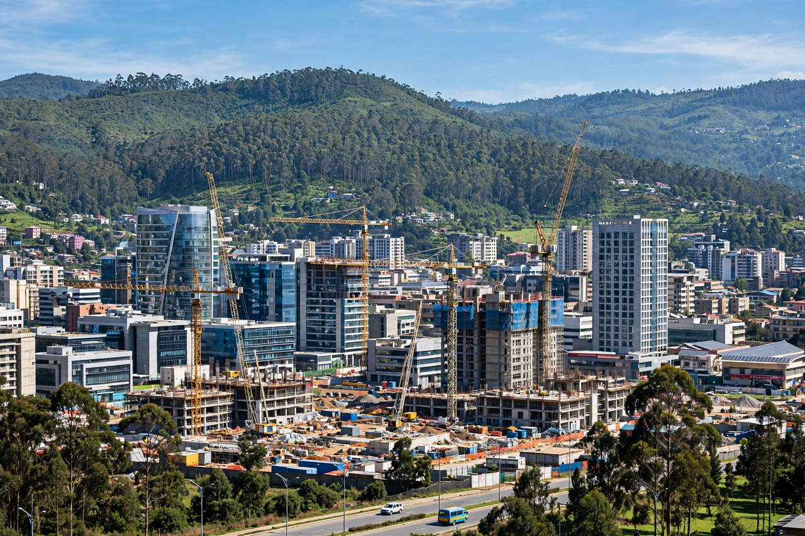

[Image placeholder: Addis Ababa, with the Entoto hills behind]| Country | Ethiopia |
|---|---|
| Founded | 1886 |
| Elevation | 2,355 m (7,726 ft) — one of the highest capitals in the world |
| Population | About 5 million (metro estimates) |
| Seat of | African Union; UN Economic Commission for Africa |
**Addis Ababa** is the capital and largest city of Ethiopia. Founded in 1886 by Emperor Menelik II and his wife Taytu Betul at a site chosen for its hot springs, its name means 'new flower' in Amharic. At an elevation of about 2,355 metres, it is one of the highest capital cities in the world.
Addis Ababa is the headquarters of the African Union and the United Nations Economic Commission for Africa, giving it a major diplomatic role; it is sometimes called the 'political capital of Africa'. Sights include the National Museum, home to the fossil 'Lucy' (Australopithecus), and the grand cathedral of the Holy Trinity.
Menelik II founded the city after moving his court from Entoto; eucalyptus trees imported from Australia transformed its landscape. Italian forces occupied Addis Ababa from 1936 to 1941 during the Second Italo-Ethiopian War. The city later became seat of the Organisation of African Unity in 1963.
Bole International Airport is a major African hub for Ethiopian Airlines. The Addis Ababa Light Rail opened in 2015, the first urban light rail in sub-Saharan Africa (outside South Africa), and a standard-gauge railway to Djibouti opened in 2016. Recent decades have seen rapid construction, alongside displacement controversies and inflation.